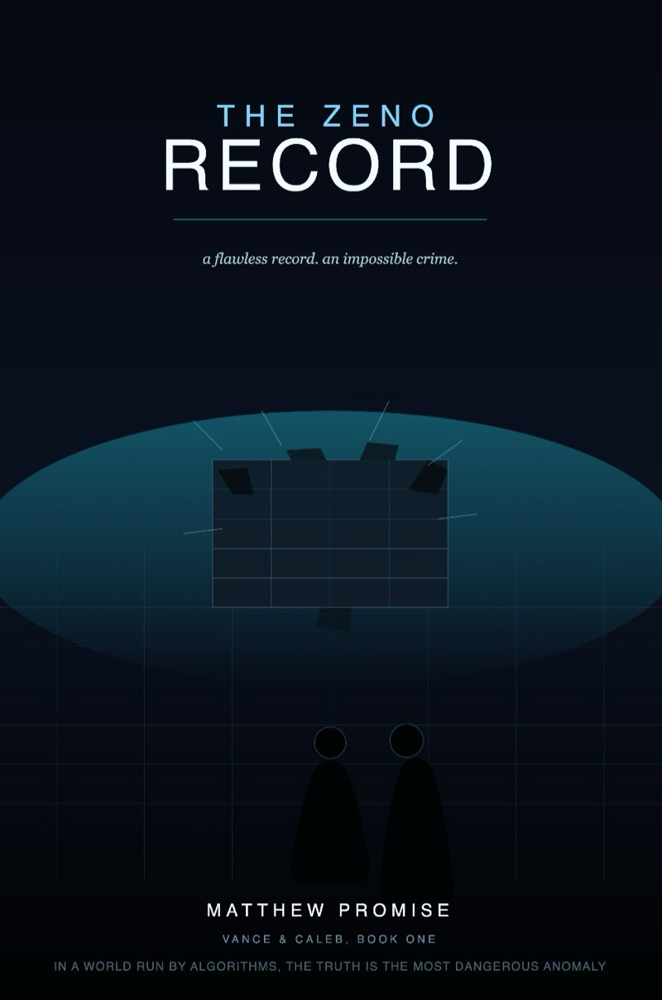
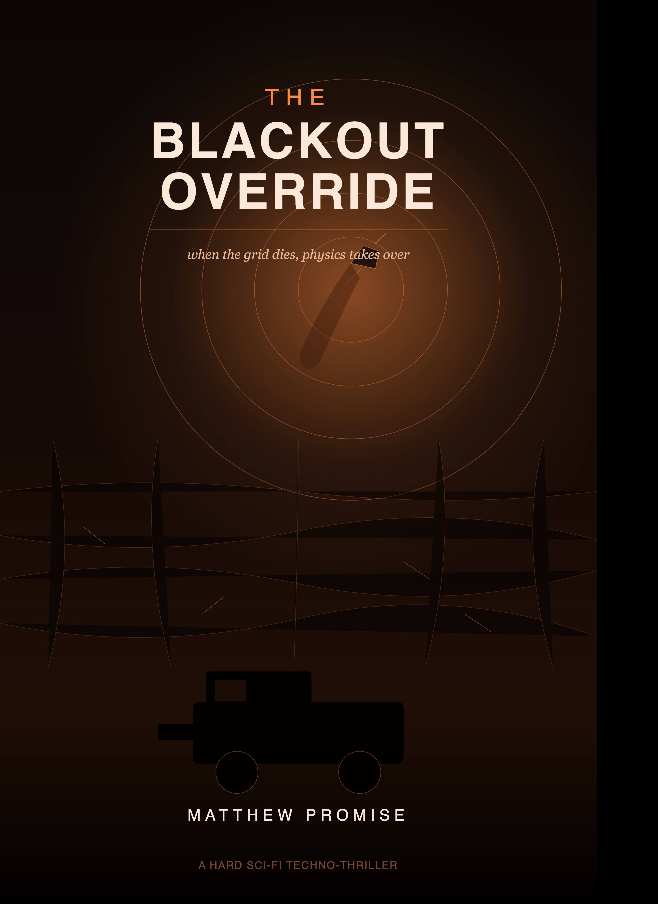
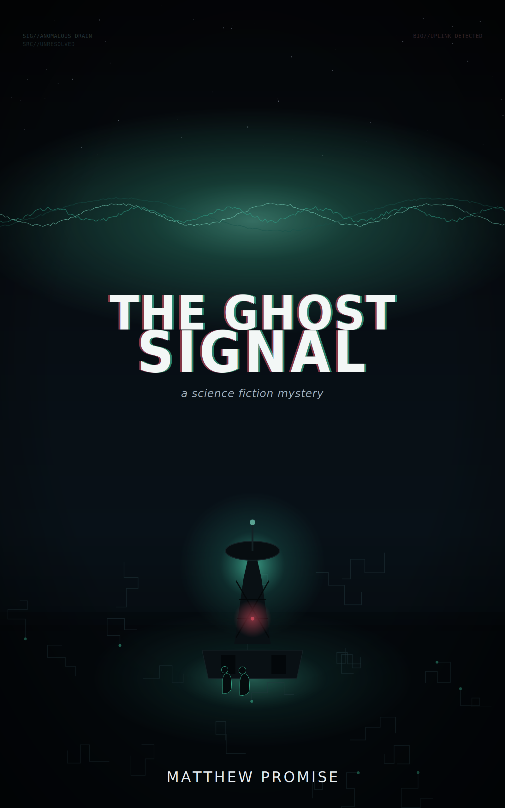
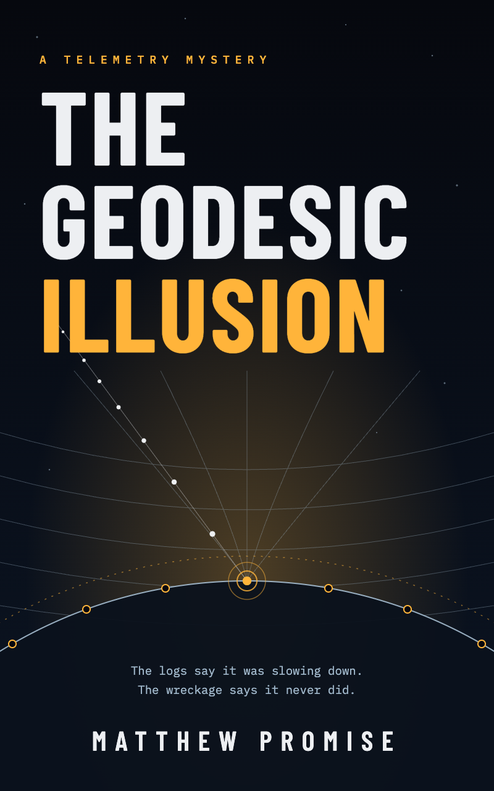

Hard Sci-Fi Mystery Novels by Matthew Promise. Step into near-future orbital mechanics and deep forensic puzzles. Read the narrative, master the underlying physics.

Follow Vance and Caleb into the future of hard criminal tracking. When an untraceable tracking anomaly fractures standard telemetry profiles, Caleb must deploy raw physics and data logic to uncover an structural criminal network hiding right inside open orbital trajectories.
I = P4πr2

The mystery deepens as localized telemetry disruptions threaten systematic infrastructure data matrices. Dive back into Caleb's investigative workspace as he challenges traditional kinematic assumptions during an unmitigated orbital mechanics crisis.
vf2 = vi2 + 2aΔx

Uncover the ultimate telemetry anomaly. When a mysterious, phantom wavelength slices through standard communication arrays, Vance and Caleb must parse a heavily distorted signal that shouldn't exist. Written as a masterful 15-chapter hard science fiction mystery, this entry explicitly anchors your core YouTube video curriculum into the narrative universe.

Your high-priority novel tracking the ultimate boundary distortion mysteries. Caleb's analytical framework encounters an operational anomaly that challenges the geometric logic of trajectories themselves. Features complete math models fully optimized for Apple Pages formatting compatibility.
d2xμdτ2 + Γμαβ dxαdτ dxβdτ = 0